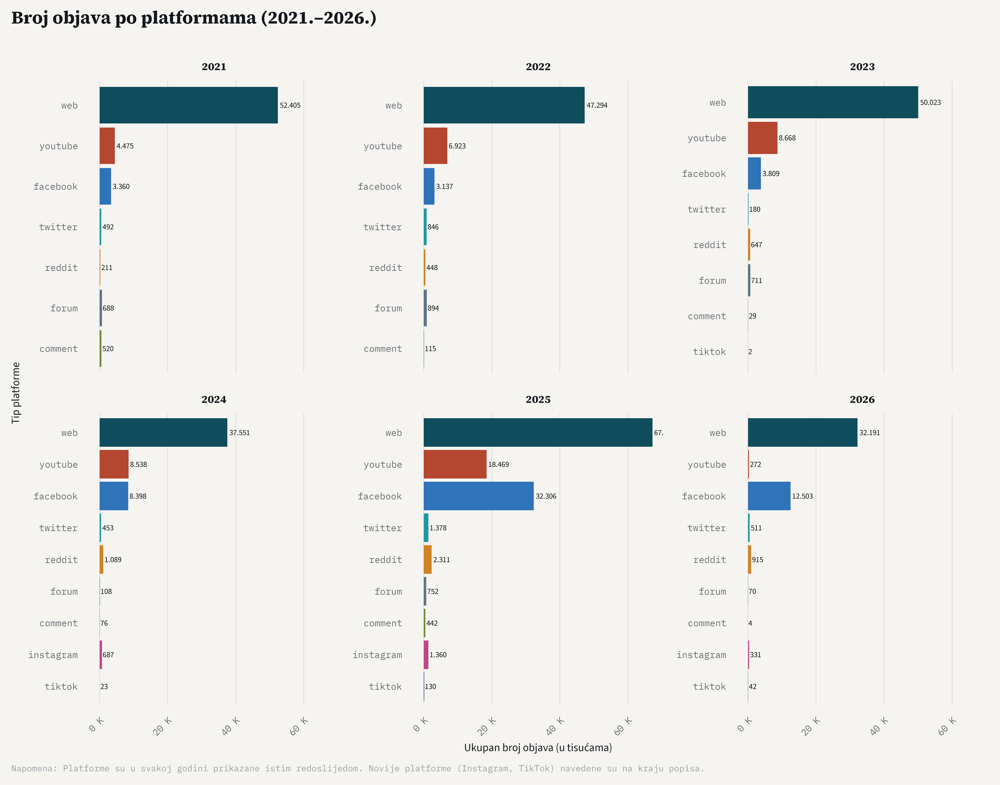
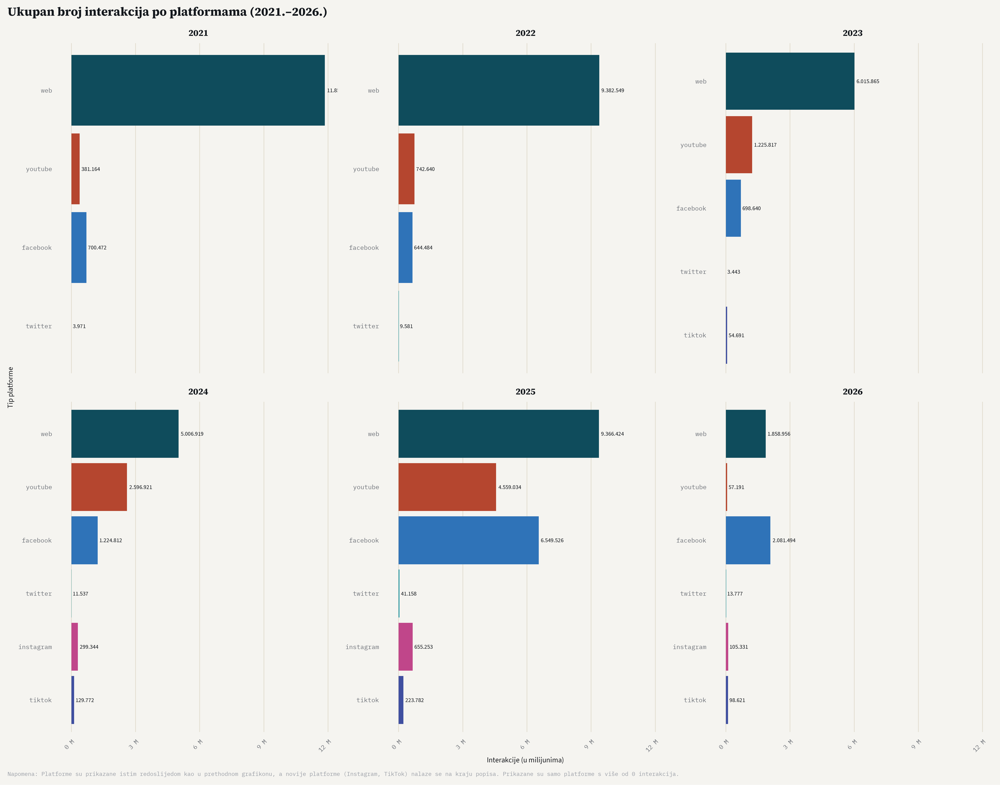
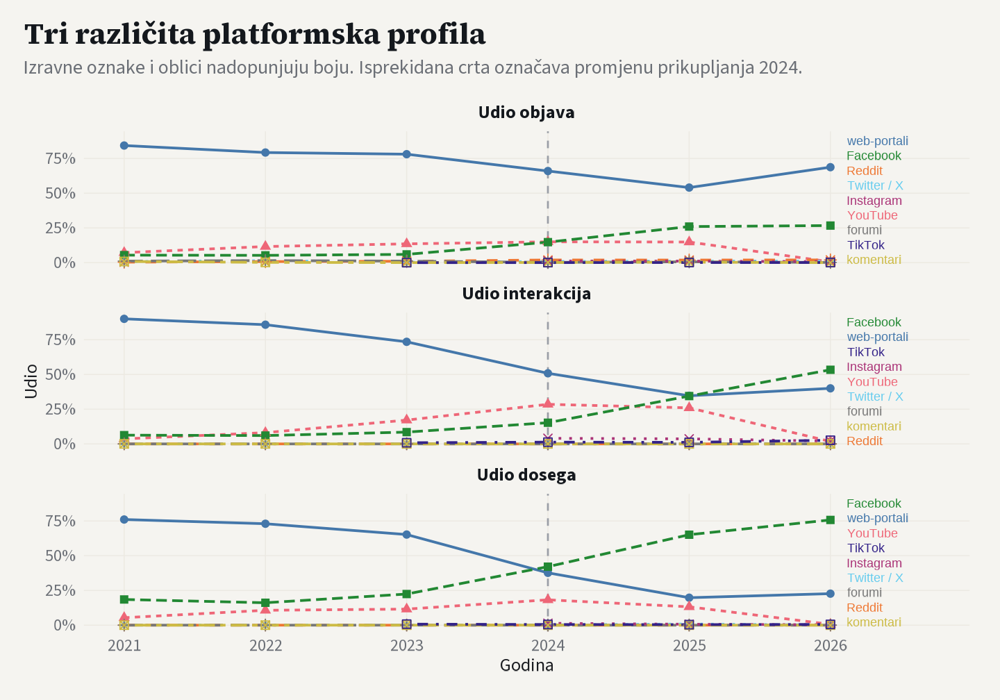
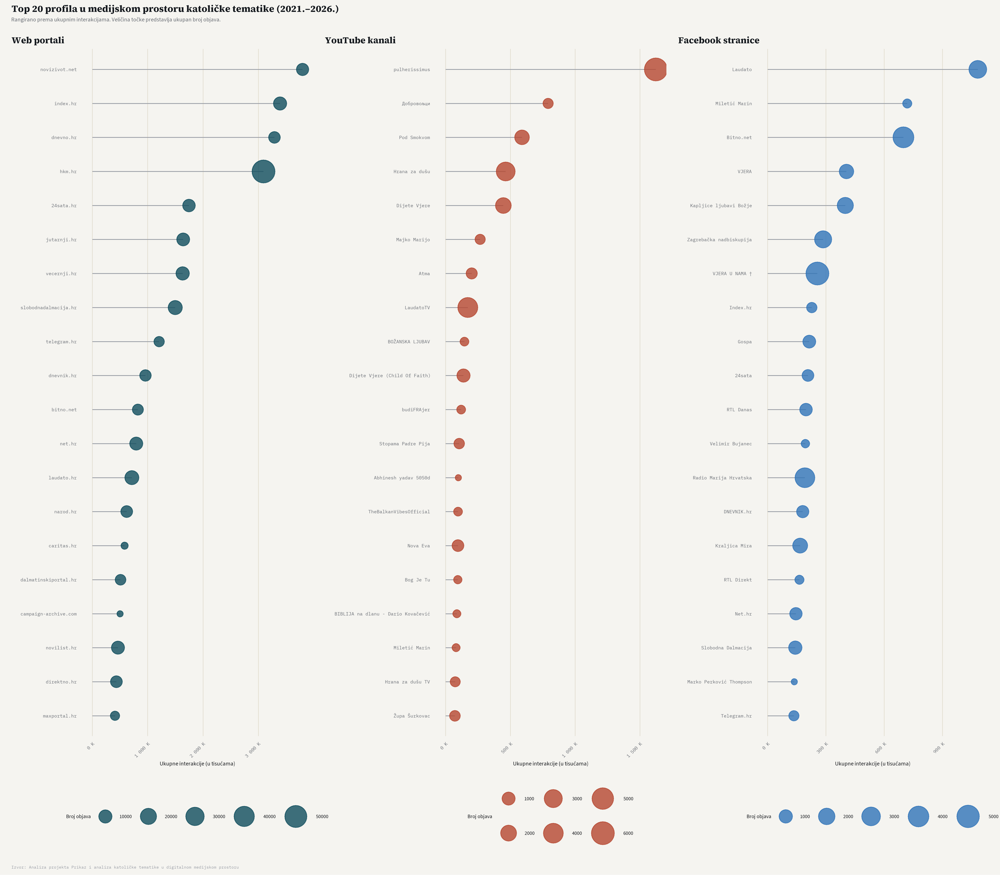
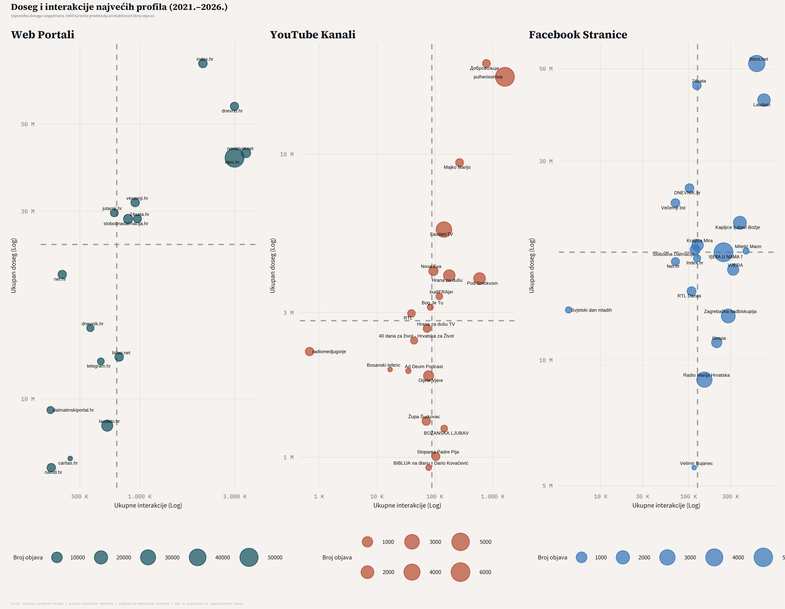

Mapa katoličkog digitalnog prostora u RH (2021-2025)
Mapiranje digitalne medijske arene
Mapa ekosustava
Akteri
Doseg
Published
June 25, 2026
Mapiranje digitalne medijske arene
Ovaj dokument predstavlja prvu analitičku mapu projekta. Analiza obuhvaća korpus od preko 610.000 medijskih objava prikupljenih između 1. siječnja 2021. i 31. prosinca 2025. Cilj mape je dati pregled katoličkog digitalnog medijskog prostora.
Kvantitativna analiza medijskog sadržaja je provedena kako bi se identificirale najvažnije karakteristike digitalnog katoličkog medijskog ekosustava. Analitički pristup u ovoj mapi strukturiran je u tri dijela. Prvi analizira platformske karakteristike prema volumenu produkcije, angažmanu publike i dosegu sadržaja. Drugi identificira najproduktivnije i najutjecajnije medijske izvore. Treći sintetizira sve nalaze.
Tri glavna pitanja su u pozadini ove mape:
Gdje se odvija rasprava? Ovdje su analizirane glavne platforme, uključujući web portale, YouTube, Facebook i druge digitalne prostore.
Tko su glavni akteri? Ovdje su identificirani najproduktivniji i najutjecajniji medijski izvori.
Kakva je dinamika utjecaja? Ovdje su uspoređeni doseg i angažman u cilju razumijevanja različitih strategija komunikacijskog djelovanja.
Prije nastavka, potrebno je definirati metrike koje se koriste u mapi.
Pod volumenom podrazumijevamo ukupan broj objava, što reflektira produktivnost aktera. Angažman označava ukupne interakcije, odnosno zbroj lajkova, komentara, dijeljenja i sličnih reakcija publike. Doseg (reach) predstavlja ukupan broj korisnika koji su potencijalno vidjeli sadržaj.
Topografija digitalnog prostora
Razumijevanje katoličkog medijskog ekosustava počinje analizom glavnih digitalnih platformi. Svaka platforma nudi specifične komunikacijske mogućnosti koje oblikuju način na koji akteri proizvode sadržaj i način na koji publika reagira. Ovaj dio mape analizira tri važna pokazatelja digitalne komunikacije:
Distribucija sadržaja po platformama
Grafikon koji slijedi prikazuje apsolutnu prevlast tradicionalnih web portala kao glavnih proizvođača sadržaja. Kroz sve promatrane godine web generira znatno više objava od svih ostalih platformi zajedno. Istovremeno je primjetan kontinuirani rast volumena sadržaja na YouTubeu, što upućuje na sve veću važnost video formata u komunikacijskim strategijama katoličkih kreatora.

Dominacija websadržaja nije samo brojčana. Ona odražava ulogu tradicionalnih medija kao čuvara vijesti u hrvatskom društvu. Njaveći portali poput index.hr, vecernji.hr i 24sata.hr brzo reagiraju na crkvene događaje, bilo da se radi o papinskim posjetima ili lokalnim blagdanima, stvarajući široku raspravu. Međutim, ta širina ponekad dolazi na račun dubine. Web portali postavljaju agendu za daljnju raspravu na drugim platformama i funkcioniraju kao primarni kanali distribucije informacija o katoličkoj tematici.
Distribucija angažmana publike po platformama
Iako web i dalje vodi u apsolutnom iznosu interakcija, YouTube i Facebook zauzimaju značajno veći udio u angažmanu nego što imaju u volumenu objava. Ovaj nalaz predstavlja prvi pokazatelj važne asimetrije. Web proizvodi najviše sadržaja, ali društvene mreže i video platforme uspješnije potiču direktan angažman publike.

Apsolutni brojevi korisni su za razumijevanje razmjera, ali relativni udjeli otkrivaju pravu dinamiku unutar ekosustava. Sljedeća vizualizacija stoga uspoređuje udio svake platforme u ukupnom broju objava, interakcija i dosega.
Relativna važnost platformi
Ova vizualizacija daje dodatni uvid u asimetriju utjecaja različitih platformi. Na lijevom panelu, koji prikazuje objave, web čini oko 80 posto svih objava. U srednjem panelu, koji prikazuje interakcije, udio weba pada na približno 70 do 75 posto, dok udio YouTubea raste i doseže gotovo 20 posto u 2023. godini. Na desnom panelu, koji prikazuje doseg, vidljiv je sličan trend gdje web gubi dio svoje prevlasti u korist društvenih i video platformi.

Asimetrija između volumena produkcije i ostvarenog angažmana ukazuje na različite mehanizme stvaranja utjecaja. Web portali prednjače kvantitetom sadržaja, dok vizualni i interaktivni formati na YouTubeu i Facebooku generiraju proporcionalno veći angažman po objavi. Ova dinamika sugerira da učinkovitost komunikacije ovisi ne samo o volumenu već i o komunikacijskim mogućnostima koje svaka platforma nudi te o strategijama pripreme sadržaja. Različite platforme omogućuju različite tipove interakcije, što rezultira različitim obrascima angažmana.
S ovim razumijevanjem platformske dinamike, analiza se sada može usmjeriti na pojedinačne aktere koji oblikuju ekosustav.
Najutjecajniji akteri u ekosustavu
Nakon makro pregleda strukturnih karakteristika digitalnog medijskog prostora, analiza se premješta na identifikaciju najvažnijih aktera unutar tri glavna ekosustava. Fokus je na web portalima, YouTube kanalima i Facebook stranicama kao primarnim arenama produkcije i distribucije sadržaja o katoličkoj tematici.
Rangiranje medijskih aktera prema angažmanu
Prvo rangiranje aktera se provodi prema angažmanu publike, odnosno prema ukupnom broju interakcija. Rezultati pokazuju jasnu podjelu prema platformskim karakteristikama.
Na web platformi prednjače veliki mainstream mediji poput vecernji.hr, jutarnji.hr i index.hr, uz specijalizirane vjerske portale kao što je bitno.net. Ovi portali spajaju visoku produktivnost sa širokim dosegom i postavljaju agendu javne rasprave o katoličkoj tematici.
YouTube platformu karakteriziraju isključivo specijalizirani kanali. Među njima prednjače LaudatoTV, uz značajnu prisutnost pojedinačnih svećenika i župa. Ovi akteri grade dugoročne odnose s publikom kroz redovitu video produkciju.
Facebook scenu karakterizira mješavina mainstream medija i specijaliziranih stranica. To odražava hibridnu prirodu platforme koja spaja funkcije informiranja i povezivanja zajednice.
Veličina točke na grafikonu predstavlja produktivnost aktera mjerenu brojem objava. Ovaj vizualni element otkriva različite komunikacijske strategije. Neki akteri objavljuju puno sadržaja s manjim prosječnim angažmanom po objavi. Drugi objavljuju rjeđe, ali s izraženim odjekom. Ne postoji jedinstvena formula uspjeha. Važna je prilagodba strategije specifičnostima platforme i publike.

Ovi akteri nisu samo izvori sadržaja. Oni aktivno oblikuju javno mnijenje u digitalnom prostoru. Mainstream mediji poput jutarnji.hr služe kao most između sekularnog svijeta i vjerskih tema, prenoseći katoličku problematiku široj javnosti. Specijalizirani kanali poput LaudatoTV na YouTubeu nude intimniji prostor za duhovne razmjene, gdje publika aktivno sudjeluje kroz komentare i dijeljenja sadržaja. Ova diferencijacija uloga odražava kompleksnost katoličke tematike koja zahtijeva različite pristupe komunikaciji, od informativnog do formativnog.
S identificiranim akterima, konačna sinteza objedinjuje sve dimenzije u jednu integriranu vizualizaciju.
Mapa utjecaja najvažnijih aktera
Konačna sinteza analize koristi tipologiju digitalnog utjecaja koja pozicionira aktere prema dvije dimenzije, angažmanu (horizontalna os) i dosegu (vertikalna os). Ova tipologija identificira četiri osnovna arhetipa, odnosno idealna tipa aktera s distinktivnim komunikacijskim profilima.
Divovi, pozicionirani u gornjem desnom kvadrantu, ostvaruju istovremeno visok doseg i visok angažman. Ovi akteri predstavljaju apsolutne lidere ekosustava jer kombiniraju široku vidljivost s aktivnim angažmanom publike.
Graditelji zajednica, smješteni u donjem desnom kvadrantu, karakterizirani su niskim dosegom uz iznimno visok angažman. Ovi akteri grade duboke odnose s vjernom i aktivnom publikom, često se fokusirajući na specifične demografske ili tematske niše.
Megafoni, pozicionirani u gornjem lijevom kvadrantu, ostvaruju visok doseg uz nizak angažman. Njihov sadržaj vidi široka publika, ali taj sadržaj ne potiče nužno aktivnu raspravu ili interakciju.
Specijalizirani akteri, smješteni u donjem lijevom kvadrantu, fokusirani su na specifičnu, manju publiku s umjerenim dosegom i angažmanom. Ovi akteri često služe jako ograničene tematske ili geografske niše.
Osi grafikona prikazane su na logaritamskoj skali kako bi se bolje prikazao širok raspon vrijednosti i omogućilo smisleno uspoređivanje aktera različitih veličina.

Arhetip graditelja zajednica ilustrira snagu malih, ali predanih grupa u digitalnom prostoru. Župne Facebook stranice, primjerice, okupljaju lokalne vjernike oko svakodnevnih molitava i zajedničkih aktivnosti. Time pokazuju kako digitalni prostor može jačati stvarne zajednice umjesto da samo širi informacije. Ovi akteri ne teže maksimalnom dosegu. Umjesto toga, oni produbljuju odnose s postojećom zajednicom, što rezultira visokim stopama angažmana i lojalnosti. Njihova strategija ilustrira alternativni put do utjecaja koji ne ovisi o veličini publike već o kvaliteti odnosa.
Zaključak i sljedeći koraci
Provedena analiza razotkriva kompleksnu arhitekturu digitalnog medijskog prostora u kojoj se odvija rasprava o katoličkoj tematici. Tri glavna nalaza karakteriziraju ovu arenu.
Funkcionalna specijalizacija platformi. Web portali funkcioniraju primarno kao proizvođači sadržaja s visokim volumenom produkcije. Oni postavljaju agendu i brzo reagiraju na aktualne crkvene događaje. YouTube i Facebook predstavljaju arene pojačanog angažmana gdje se ostvaruje proporcionalno veći utjecaj po objavi. Ova specijalizacija odražava različite komunikacijske mogućnosti i očekivanja publike na svakoj platformi.
Jasna segmentacija aktera. Mainstream mediji prednjače u web prostoru i održavaju ulogu primarnih distributera informacija o katoličkoj tematici. Specijalizirani kanali i pojedinci preuzimaju vodeće pozicije na YouTubeu i Facebooku, gradeći dublje odnose s publikom kroz redovitu interakciju. Ova diferencijacija odražava različite strategije pristupa publici i komunikacijske paradigme, od informativne do formativne.
Višedimenzionalnost digitalne moći. Promatranje isključivo jedne metrike ne reflektira kompleksnost utjecaja koji akteri ostvaruju kroz različite kombinacije dosega, angažmana i produktivnosti. Različiti akteri uspijevaju kroz različite strategije, od masovne produkcije mainstream medija do fokusirane izgradnje zajednice specijaliziranih kanala. Ne postoji jedinstvena formula uspjeha, već različiti putevi do utjecaja prilagođeni specifičnostima platforme, publike i ciljeva aktera.
Nakon kartografiranja strukture ekosustava i identificiranja glavnih aktera, druga istraživačka mapa usmjerava se na tematsku analizu sadržaja. To uključuje dubinsku analizu diskurzivnih obrazaca i sentimenta kako bi se rekonstruirali narativi koji oblikuju katoličku tematiku u hrvatskom digitalnom prostoru. Tematska analiza omogućit će razumijevanje ne samo tko govori i gdje, već i o čemu se govori, kako se tema razvija kroz vrijeme i koje perspektive prevladavaju u javnoj raspravi o katoličkim pitanjima u Hrvatskoj.
Source Code
---title: "Mapa katoličkog digitalnog prostora u RH (2021-2025)"subtitle: "Mapiranje digitalne medijske arene"date: last-modifiedcategories: ["Mapa ekosustava", "Akteri", "Doseg"]---```{r}#| label: setup#| include: falseknitr::opts_chunk$set(echo =FALSE,message =FALSE,warning =FALSE,fig.width =14,fig.height =9,dpi =200)``````{r}#| label: librarieslibrary(ggplot2)source("../../R/theme_digikat.R")library(dplyr)library(scales)library(patchwork)library(ggrepel)```## Mapiranje digitalne medijske areneOvaj dokument predstavlja prvu analitičku mapu projekta. Analiza obuhvaća korpus od preko 610.000 medijskih objava prikupljenih između 1. siječnja 2021. i 31. prosinca 2025. Cilj mape je dati pregled katoličkog digitalnog medijskog prostora.Kvantitativna analiza medijskog sadržaja je provedena kako bi se identificirale najvažnije karakteristike digitalnog katoličkog medijskog ekosustava. Analitički pristup u ovoj mapi strukturiran je u tri dijela. Prvi analizira platformske karakteristike prema volumenu produkcije, angažmanu publike i dosegu sadržaja. Drugi identificira najproduktivnije i najutjecajnije medijske izvore. Treći sintetizira sve nalaze.Tri glavna pitanja su u pozadini ove mape:* Gdje se odvija rasprava? Ovdje su analizirane glavne platforme, uključujući web portale, YouTube, Facebook i druge digitalne prostore. * Tko su glavni akteri? Ovdje su identificirani najproduktivniji i najutjecajniji medijski izvori. * Kakva je dinamika utjecaja? Ovdje su uspoređeni doseg i angažman u cilju razumijevanja različitih strategija komunikacijskog djelovanja.<div class="metric-grid"> <div class="metric-card"> <div class="metric-value">610.000+</div> <div class="metric-label">Medijskih objava</div> </div> <div class="metric-card"> <div class="metric-value">6</div> <div class="metric-label">Platformi</div> </div> <div class="metric-card"> <div class="metric-value">4</div> <div class="metric-label">Arhetipa aktera</div> </div> <div class="metric-card"> <div class="metric-value">2021.–2025.</div> <div class="metric-label">Razdoblje analize</div> </div></div>::: {.callout-note}## Prije nastavka, potrebno je definirati metrike koje se koriste u mapi.Pod **volumenom** podrazumijevamo ukupan broj objava, što reflektira produktivnost aktera. **Angažman** označava ukupne interakcije, odnosno zbroj lajkova, komentara, dijeljenja i sličnih reakcija publike. **Doseg** (reach) predstavlja ukupan broj korisnika koji su potencijalno vidjeli sadržaj.:::```{r}#| label: data-preparation#| eval: true#| echo: falsedta <-readRDS("../../data/merged_comprehensive.rds")# remove tiktok and missing SOURCE_TYPEdta <- dta %>%filter(SOURCE_TYPE !="tiktok", !is.na(SOURCE_TYPE)) %>%mutate(SOURCE_TYPE =factor(SOURCE_TYPE, levels =c("web", "youtube", "facebook", "twitter", "reddit", "forum", "comment")) ) %>%# filter data from 2021-01-01 to 2025-12-31filter(DATE >=as.Date("2021-01-01") & DATE <=as.Date("2025-12-31")) %>%filter(year >=2021& year <=2025)# 3. platform_summaryplatform_summary <- dta %>%group_by(year, SOURCE_TYPE) %>%summarise(total_posts =n(),total_interactions =sum(INTERACTIONS, na.rm=TRUE),total_reach =sum(REACH, na.rm=TRUE) ) %>%ungroup()saveRDS(platform_summary, "../../data/processed/platform_summary.rds")# 4. proportions_summaryproportions_summary <- platform_summary %>%group_by(year) %>%mutate(post_share = total_posts /sum(total_posts),interaction_share = total_interactions /sum(total_interactions),reach_share = total_reach /sum(total_reach) ) %>%ungroup()saveRDS(proportions_summary, "../../data/processed/proportions_summary.rds")# 5. source_summary & top_sources_by_yearsource_summary <- dta %>%filter(!is.na(FROM)) %>%group_by(year, FROM) %>%summarise(productivity =n(),total_interactions =sum(INTERACTIONS, na.rm=TRUE),avg_engagement_rate =mean(ENGAGEMENT_RATE, na.rm=TRUE),total_reach =sum(REACH, na.rm=TRUE) ) %>%ungroup()saveRDS(source_summary, "../../data/processed/source_summary.rds")top_sources_by_year <- source_summary %>%group_by(year) %>%slice_max(order_by = total_interactions, n =15) %>%ungroup()saveRDS(top_sources_by_year, "../../data/processed/top_sources_by_year.rds")# 6. top_XX_sources for web/youtube/facebookfor(pl inc("web","youtube","facebook")) { df <- dta %>%filter(SOURCE_TYPE == pl, !is.na(FROM)) %>%group_by(FROM) %>%summarise(total_posts =n(),total_interactions =sum(INTERACTIONS, na.rm=TRUE),total_reach =sum(REACH, na.rm=TRUE) ) %>%ungroup() %>%slice_max(order_by = total_interactions, n =20)saveRDS(df, file =sprintf("../../data/processed/top_%s_sources.rds", pl))}# 7. web_actors / youtube_actors / facebook_actorsget_top_actors <-function(data, platform_filter) { platform_data <- data %>%filter(SOURCE_TYPE == platform_filter &!is.na(FROM)) %>%group_by(FROM) %>%summarise(total_posts =n(),total_interactions =sum(INTERACTIONS, na.rm=TRUE),total_reach =sum(REACH, na.rm=TRUE) ) %>%ungroup() top_by_interactions <-slice_max(platform_data, order_by = total_interactions, n =15) top_by_reach <-slice_max(platform_data, order_by = total_reach, n =15)bind_rows(top_by_interactions, top_by_reach) %>%distinct(FROM, .keep_all =TRUE)}for(pl inc("web","youtube","facebook")) { actors <-get_top_actors(dta, pl)saveRDS(actors, file =sprintf("../../data/processed/%s_actors.rds", pl))}``````{r}#| label: load-data# load only the pre-computed tablesplatform_summary <-readRDS("../../data/processed/platform_summary.rds")proportions_summary <-readRDS("../../data/processed/proportions_summary.rds")source_summary <-readRDS("../../data/processed/source_summary.rds")top_sources_by_year <-readRDS("../../data/processed/top_sources_by_year.rds")top_web_sources <-readRDS("../../data/processed/top_web_sources.rds")top_youtube_sources <-readRDS("../../data/processed/top_youtube_sources.rds")top_facebook_sources <-readRDS("../../data/processed/top_facebook_sources.rds")web_actors <-readRDS("../../data/processed/web_actors.rds")youtube_actors <-readRDS("../../data/processed/youtube_actors.rds")facebook_actors <-readRDS("../../data/processed/facebook_actors.rds")# Definiramo paletu boja za konzistentnostplatform_colors <-c("web"="#1f77b4", "youtube"="#d62728", "facebook"="#3b5998","twitter"="#1DA1F2", "reddit"="#FF4500", "forum"="#7f7f7f", "comment"="#bcbd22")```# Topografija digitalnog prostoraRazumijevanje katoličkog medijskog ekosustava počinje analizom glavnih digitalnih platformi. Svaka platforma nudi specifične komunikacijske mogućnosti koje oblikuju način na koji akteri proizvode sadržaj i način na koji publika reagira. Ovaj dio mape analizira tri važna pokazatelja digitalne komunikacije:## Distribucija sadržaja po platformamaGrafikon koji slijedi prikazuje apsolutnu prevlast tradicionalnih web portala kao glavnih proizvođača sadržaja. Kroz sve promatrane godine web generira znatno više objava od svih ostalih platformi zajedno. Istovremeno je primjetan kontinuirani rast volumena sadržaja na YouTubeu, što upućuje na sve veću važnost video formata u komunikacijskim strategijama katoličkih kreatora.```{r}#| label: plot-volume#| fig-width: 14#| fig-height: 11plot_volume <- platform_summary %>%filter(!is.na(SOURCE_TYPE)) %>%arrange(year, total_posts) %>%mutate(SOURCE_TYPE_ordered =factor(SOURCE_TYPE, levels =unique(SOURCE_TYPE))) %>%ggplot(aes(x = total_posts, y = SOURCE_TYPE_ordered, fill = SOURCE_TYPE)) +geom_col() +geom_text(aes(label =comma(total_posts, accuracy =1)), hjust =-0.1, size =4, color ="black") +facet_wrap(~year, scales ="free_y") +scale_x_continuous(labels =label_number(suffix =" K", scale =1e-3)) +scale_fill_manual(values = platform_colors) +theme_digikat(base_size =16) +theme(legend.position ="none",strip.text =element_text(face ="bold", size =18),panel.grid.major.y =element_blank(),axis.text.x =element_text(angle =45, hjust =1) ) +labs(title ="Broj objava po platformama (2021-2025)",subtitle ="",x ="Ukupan broj objava (u tisućama)",y ="Tip platforme",caption ="Napomena: Stupci su sortirani po volumenu." )print(plot_volume)```Dominacija websadržaja nije samo brojčana. Ona odražava ulogu tradicionalnih medija kao čuvara vijesti u hrvatskom društvu. Njaveći portali poput index.hr, vecernji.hr i 24sata.hr brzo reagiraju na crkvene događaje, bilo da se radi o papinskim posjetima ili lokalnim blagdanima, stvarajući široku raspravu. Međutim, ta širina ponekad dolazi na račun dubine. Web portali postavljaju agendu za daljnju raspravu na drugim platformama i funkcioniraju kao primarni kanali distribucije informacija o katoličkoj tematici.## Distribucija angažmana publike po platformamaIako web i dalje vodi u apsolutnom iznosu interakcija, YouTube i Facebook zauzimaju značajno veći udio u angažmanu nego što imaju u volumenu objava. Ovaj nalaz predstavlja prvi pokazatelj važne asimetrije. Web proizvodi najviše sadržaja, ali društvene mreže i video platforme uspješnije potiču direktan angažman publike.```{r}#| label: plot-interaction#| fig-width: 14#| fig-height: 11plot_interactions <- platform_summary %>%filter(!is.na(SOURCE_TYPE)) %>%filter(total_interactions >0) %>%arrange(year, total_interactions) %>%mutate(SOURCE_TYPE_ordered =factor(SOURCE_TYPE, levels =unique(SOURCE_TYPE))) %>%ggplot(aes(x = total_interactions, y = SOURCE_TYPE_ordered, fill = SOURCE_TYPE)) +geom_col() +geom_text(aes(label =comma(total_interactions, accuracy =1)), hjust =-0.1, size =4, color ="black") +facet_wrap(~year, scales ="free_y") +scale_x_continuous(labels =label_number(suffix =" M", scale =1e-6)) +scale_fill_manual(values = platform_colors) +theme_digikat(base_size =16) +theme(legend.position ="none",strip.text =element_text(face ="bold", size =18),panel.grid.major.y =element_blank(),axis.text.x =element_text(angle =45, hjust =1) ) +labs(title ="Ukupan broj interakcija po platformama (2021–2025)",x ="Interakcije (u milijunima)",y ="Tip platforme",caption ="Napomena: Stupci su sortirani po interakcijama. Prikazane su samo platforme s više od 0 interakcija." )print(plot_interactions)```Apsolutni brojevi korisni su za razumijevanje razmjera, ali relativni udjeli otkrivaju pravu dinamiku unutar ekosustava. Sljedeća vizualizacija stoga uspoređuje udio svake platforme u ukupnom broju objava, interakcija i dosega.## Relativna važnost platformi Ova vizualizacija daje dodatni uvid u asimetriju utjecaja različitih platformi. Na lijevom panelu, koji prikazuje objave, web čini oko 80 posto svih objava. U srednjem panelu, koji prikazuje interakcije, udio weba pada na približno 70 do 75 posto, dok udio YouTubea raste i doseže gotovo 20 posto u 2023. godini. Na desnom panelu, koji prikazuje doseg, vidljiv je sličan trend gdje web gubi dio svoje prevlasti u korist društvenih i video platformi.```{r}#| label: plot-shares#| fig-width: 18#| fig-height: 11plot_share_posts <- proportions_summary %>%filter(!is.na(SOURCE_TYPE)) %>%ggplot(aes(x = year, y = post_share, fill = SOURCE_TYPE)) +geom_col(position ="fill") +scale_y_continuous(labels =percent_format()) +scale_x_continuous(breaks =c(2021, 2022, 2023, 2024, 2025)) +scale_fill_manual(values = platform_colors) +theme_digikat(base_size =16) +labs(title ="Udio objava", x ="Godina", y ="Postotak")plot_share_interactions <- proportions_summary %>%filter(!is.na(SOURCE_TYPE)) %>%filter(total_interactions >0) %>%ggplot(aes(x = year, y = interaction_share, fill = SOURCE_TYPE)) +geom_col(position ="fill") +scale_y_continuous(labels =percent_format()) +scale_x_continuous(breaks =c(2021, 2022, 2023, 2024, 2025)) +scale_fill_manual(values = platform_colors, guide ="none") +theme_digikat(base_size =16) +labs(title ="Udio interakcija", x ="Godina", y ="Postotak")plot_share_reach <- proportions_summary %>%filter(!is.na(SOURCE_TYPE)) %>%filter(total_reach >0) %>%ggplot(aes(x = year, y = reach_share, fill = SOURCE_TYPE)) +geom_col(position ="fill") +scale_y_continuous(labels =percent_format()) +scale_x_continuous(breaks =c(2021, 2022, 2023, 2024, 2025)) +scale_fill_manual(values = platform_colors, guide ="none") +theme_digikat(base_size =16) +labs(title ="Udio dosega", x ="Godina", y ="Postotak")plot_combined_share <- (plot_share_posts + plot_share_interactions + plot_share_reach) +plot_layout(guides ='collect') +plot_annotation(title ="Struktura digitalnog ekosustava (2021–2025)",subtitle ="Usporedba udjela platformi u ukupnom broju objava, interakcija i dosega.",caption ="Web generira najviše sadržaja, ali YouTube i Facebook preuzimaju sve veći dio utjecaja." )print(plot_combined_share)```Asimetrija između volumena produkcije i ostvarenog angažmana ukazuje na različite mehanizme stvaranja utjecaja. Web portali prednjače kvantitetom sadržaja, dok vizualni i interaktivni formati na YouTubeu i Facebooku generiraju proporcionalno veći angažman po objavi. Ova dinamika sugerira da učinkovitost komunikacije ovisi ne samo o volumenu već i o komunikacijskim mogućnostima koje svaka platforma nudi te o strategijama pripreme sadržaja. Različite platforme omogućuju različite tipove interakcije, što rezultira različitim obrascima angažmana.S ovim razumijevanjem platformske dinamike, analiza se sada može usmjeriti na pojedinačne aktere koji oblikuju ekosustav.# Najutjecajniji akteri u ekosustavuNakon makro pregleda strukturnih karakteristika digitalnog medijskog prostora, analiza se premješta na identifikaciju najvažnijih aktera unutar tri glavna ekosustava. Fokus je na web portalima, YouTube kanalima i Facebook stranicama kao primarnim arenama produkcije i distribucije sadržaja o katoličkoj tematici.## Rangiranje medijskih aktera prema angažmanuPrvo rangiranje aktera se provodi prema angažmanu publike, odnosno prema ukupnom broju interakcija. Rezultati pokazuju jasnu podjelu prema platformskim karakteristikama.Na web platformi prednjače veliki mainstream mediji poput vecernji.hr, jutarnji.hr i index.hr, uz specijalizirane vjerske portale kao što je bitno.net. Ovi portali spajaju visoku produktivnost sa širokim dosegom i postavljaju agendu javne rasprave o katoličkoj tematici.YouTube platformu karakteriziraju isključivo specijalizirani kanali. Među njima prednjače LaudatoTV, uz značajnu prisutnost pojedinačnih svećenika i župa. Ovi akteri grade dugoročne odnose s publikom kroz redovitu video produkciju.Facebook scenu karakterizira mješavina mainstream medija i specijaliziranih stranica. To odražava hibridnu prirodu platforme koja spaja funkcije informiranja i povezivanja zajednice.Veličina točke na grafikonu predstavlja produktivnost aktera mjerenu brojem objava. Ovaj vizualni element otkriva različite komunikacijske strategije. Neki akteri objavljuju puno sadržaja s manjim prosječnim angažmanom po objavi. Drugi objavljuju rjeđe, ali s izraženim odjekom. Ne postoji jedinstvena formula uspjeha. Važna je prilagodba strategije specifičnostima platforme i publike.```{r}#| label: plot-lollipops-interactions#| fig-width: 16#| fig-height: 14create_top_source_plot <-function(data, platform_name, platform_color) { data <- data %>%arrange(total_interactions) %>%mutate(FROM =factor(FROM, levels = FROM))ggplot(data, aes(x = FROM, y = total_interactions)) +geom_segment(aes(x = FROM, xend = FROM, y =0, yend = total_interactions), color ="grey", linewidth =0.5) +geom_point(aes(size = total_posts), color = platform_color, alpha =0.8) +coord_flip() +scale_y_continuous(labels =label_number(suffix =" K", scale =1e-3)) +scale_size_continuous(range =c(3, 12), name ="Broj objava") +theme_digikat(base_size =14) +theme(panel.grid.major.y =element_blank(), panel.border =element_blank(),axis.ticks.y =element_blank(), legend.position ="bottom",axis.text.x =element_text(angle =45, hjust =1) ) +labs(title = platform_name, x ="", y ="Ukupne interakcije (u tisućama)")}plot_web <-create_top_source_plot(top_web_sources, "Web portali", "#1f77b4")plot_youtube <-create_top_source_plot(top_youtube_sources, "YouTube kanali", "#d62728")plot_facebook <-create_top_source_plot(top_facebook_sources, "Facebook stranice", "#3b5998")final_dashboard <- plot_web + plot_youtube + plot_facebook +plot_annotation(title ="Top 20 profila u medijskom prostoru katoličke tematike (2021-2025)",subtitle ="Rangirano prema ukupnim interakcijama. Veličina točke predstavlja ukupan broj objava.",caption ="Izvor: Analiza projekta Prikaz i analiza katoličke tematike u digitalnom medijskom prostoru",theme =theme(plot.title =element_text(size =22, face ="bold")) )print(final_dashboard)```Ovi akteri nisu samo izvori sadržaja. Oni aktivno oblikuju javno mnijenje u digitalnom prostoru. Mainstream mediji poput jutarnji.hr služe kao most između sekularnog svijeta i vjerskih tema, prenoseći katoličku problematiku široj javnosti. Specijalizirani kanali poput LaudatoTV na YouTubeu nude intimniji prostor za duhovne razmjene, gdje publika aktivno sudjeluje kroz komentare i dijeljenja sadržaja. Ova diferencijacija uloga odražava kompleksnost katoličke tematike koja zahtijeva različite pristupe komunikaciji, od informativnog do formativnog.S identificiranim akterima, konačna sinteza objedinjuje sve dimenzije u jednu integriranu vizualizaciju.# Mapa utjecaja najvažnijih akteraKonačna sinteza analize koristi tipologiju digitalnog utjecaja koja pozicionira aktere prema dvije dimenzije, angažmanu (horizontalna os) i dosegu (vertikalna os). Ova tipologija identificira četiri osnovna **arhetipa**, odnosno idealna tipa aktera s distinktivnim komunikacijskim profilima.**Divovi**, pozicionirani u gornjem desnom kvadrantu, ostvaruju istovremeno visok doseg i visok angažman. Ovi akteri predstavljaju apsolutne lidere ekosustava jer kombiniraju široku vidljivost s aktivnim angažmanom publike.**Graditelji zajednica**, smješteni u donjem desnom kvadrantu, karakterizirani su niskim dosegom uz iznimno visok angažman. Ovi akteri grade duboke odnose s vjernom i aktivnom publikom, često se fokusirajući na specifične demografske ili tematske niše.**Megafoni**, pozicionirani u gornjem lijevom kvadrantu, ostvaruju visok doseg uz nizak angažman. Njihov sadržaj vidi široka publika, ali taj sadržaj ne potiče nužno aktivnu raspravu ili interakciju.**Specijalizirani akteri**, smješteni u donjem lijevom kvadrantu, fokusirani su na specifičnu, manju publiku s umjerenim dosegom i angažmanom. Ovi akteri često služe jako ograničene tematske ili geografske niše.Osi grafikona prikazane su na logaritamskoj skali kako bi se bolje prikazao širok raspon vrijednosti i omogućilo smisleno uspoređivanje aktera različitih veličina.```{r}#| label: plot-actor-map#| fig-width: 18#| fig-height: 14create_actor_map_plot <-function(data, platform_name, platform_color) {if(nrow(data) <2) { return(ggplot() +labs(title =paste("Nema dovoljno podataka za", platform_name)) +theme_void()) } median_interactions <-median(data$total_interactions, na.rm =TRUE) median_reach <-median(data$total_reach, na.rm =TRUE)ggplot(data, aes(x = total_interactions, y = total_reach)) +geom_vline(xintercept = median_interactions, linetype ="dashed", color ="grey70") +geom_hline(yintercept = median_reach, linetype ="dashed", color ="grey70") +geom_point(aes(size = total_posts), color = platform_color, alpha =0.7) +geom_text_repel(aes(label = FROM), size =4, max.overlaps =15) +scale_x_log10(labels =label_number(big.mark =".", suffix =" K", scale =1e-3)) +scale_y_log10(labels =label_number(big.mark =".", suffix =" M", scale =1e-6)) +scale_size_continuous(range =c(3, 14), name ="Broj objava") +theme_digikat(base_size =14) +theme(legend.position ="bottom") +labs(title = platform_name, x ="Ukupne interakcije (Log)", y ="Ukupan doseg (Log)" )}plot_map_web <-create_actor_map_plot(web_actors, "Web Portali", "#1f77b4")plot_map_youtube <-create_actor_map_plot(youtube_actors, "YouTube Kanali", "#d62728")plot_map_facebook <-create_actor_map_plot(facebook_actors, "Facebook Stranice", "#3b5998")final_map_dashboard <- plot_map_web + plot_map_youtube + plot_map_facebook +plot_annotation(title ="Mapa utjecaja najvećih profila u medijskom prostoru katoličke tematike (2021-2025)",subtitle ="Usporedba dosega i angažmana. Veličina točke predstavlja produktivnost (broj objava).",caption ="Izvor: Analiza projekta Prikaz i analiza katoličke tematike u digitalnom medijskom prostoru | Osi su prikazane na logaritamskoj skali.",theme =theme(plot.title =element_text(size =22, face ="bold")) ) &theme(plot.background =element_rect(fill ="white", color =NA))print(final_map_dashboard)```Arhetip graditelja zajednica ilustrira snagu malih, ali predanih grupa u digitalnom prostoru. Župne Facebook stranice, primjerice, okupljaju lokalne vjernike oko svakodnevnih molitava i zajedničkih aktivnosti. Time pokazuju kako digitalni prostor može jačati stvarne zajednice umjesto da samo širi informacije. Ovi akteri ne teže maksimalnom dosegu. Umjesto toga, oni produbljuju odnose s postojećom zajednicom, što rezultira visokim stopama angažmana i lojalnosti. Njihova strategija ilustrira alternativni put do utjecaja koji ne ovisi o veličini publike već o kvaliteti odnosa.## Zaključak i sljedeći koraciProvedena analiza razotkriva kompleksnu arhitekturu digitalnog medijskog prostora u kojoj se odvija rasprava o katoličkoj tematici. Tri glavna nalaza karakteriziraju ovu arenu.**Funkcionalna specijalizacija platformi.** Web portali funkcioniraju primarno kao proizvođači sadržaja s visokim volumenom produkcije. Oni postavljaju agendu i brzo reagiraju na aktualne crkvene događaje. YouTube i Facebook predstavljaju arene pojačanog angažmana gdje se ostvaruje proporcionalno veći utjecaj po objavi. Ova specijalizacija odražava različite komunikacijske mogućnosti i očekivanja publike na svakoj platformi.**Jasna segmentacija aktera.** Mainstream mediji prednjače u web prostoru i održavaju ulogu primarnih distributera informacija o katoličkoj tematici. Specijalizirani kanali i pojedinci preuzimaju vodeće pozicije na YouTubeu i Facebooku, gradeći dublje odnose s publikom kroz redovitu interakciju. Ova diferencijacija odražava različite strategije pristupa publici i komunikacijske paradigme, od informativne do formativne.**Višedimenzionalnost digitalne moći.** Promatranje isključivo jedne metrike ne reflektira kompleksnost utjecaja koji akteri ostvaruju kroz različite kombinacije dosega, angažmana i produktivnosti. Različiti akteri uspijevaju kroz različite strategije, od masovne produkcije mainstream medija do fokusirane izgradnje zajednice specijaliziranih kanala. Ne postoji jedinstvena formula uspjeha, već različiti putevi do utjecaja prilagođeni specifičnostima platforme, publike i ciljeva aktera.Nakon kartografiranja strukture ekosustava i identificiranja glavnih aktera, druga istraživačka [mapa](https://raw.githack.com/lusiki/DigiKat/main/docs/pages/mapa/mapa_stats.html) usmjerava se na tematsku analizu sadržaja. To uključuje dubinsku analizu diskurzivnih obrazaca i sentimenta kako bi se rekonstruirali narativi koji oblikuju katoličku tematiku u hrvatskom digitalnom prostoru. Tematska analiza omogućit će razumijevanje ne samo tko govori i gdje, već i o čemu se govori, kako se tema razvija kroz vrijeme i koje perspektive prevladavaju u javnoj raspravi o katoličkim pitanjima u Hrvatskoj.